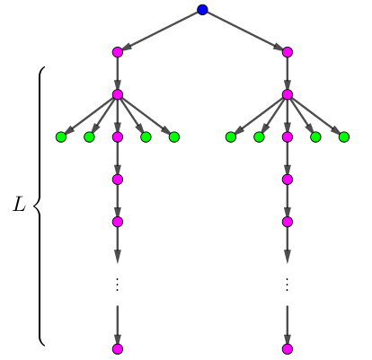

今天是世界水日，著名的水题资源专家蝈蝈大臣发起了水题走四方活动，向全世界发放成千上万的水题。
蝈蝈大臣是家里蹲大学的教授，当然不愿意出门发水题啦！所以他委托他的助手欧姆来发。
助手欧姆最近做 UR #6 被狗狗传染了懒癌，当然不愿意出门发水题啦！所以他请来了高手 —— 地卜师。
全世界一共 $n$ 个城市，编号分别为 $1, \cdots, n$。城市之间由双向道路相连，形成了一棵树。如果这棵树以 $1$ 为根，则除 $1$ 以外每个结点 $v$ 的父亲结点的编号 $p_v$ 满足 $p_v < v$。
由于地卜师掌握了克隆的核心科技，把自己完全复制了一份，他和他的分身一共两个地卜师一起出去执行任务。
现在，两个地卜师都站在 $1$ 号城市。地卜师可以沿道路行走，从一个城市移动到另一个城市。走一条道路需要花费 $1$ 单位时间。当然，地卜师可以停留在某个城市不动。每到一个没有发放水题的城市，地卜师都会发水题。在一个城市里发水题的时间不计。
由于地卜师有强迫症，他沿道路移动时总是从一个城市移动到编号更大的城市。即总是从一个结点移动到它的儿子结点。地卜师和他的分身可以同时移动。
但是地卜师这样好像不一定能经过所有的城市？没关系！地卜师会瞬移。如果某个时刻两个地卜师都在某个城市里 (而不是在去某个城市的道路上)，那么其中一个地卜师可以瞬移到另一个地卜师所在的城市。瞬移所需的时间不计。
现在地卜师想知道，要想顺利给每个城市都发放水题，最短需要多少时间。
由于本题数据范围太大，为了方便读入，输入的是这棵树的括号序列表示。
第一行包含一个正整数 $n$ ($n \leq 5 \times 10^6$)，表示树的节点个数。
第二行包含一个长度为 $2n$ 的字符串，仅包含 ( 和 )，描述这棵树的括号序列。
输出一行一个整数，表示最短需要多少时间完成任务。
考虑贪心完成一个任务。假设现在两个地卜师 $A, B$ 都在同一个节点 $v$ 上，我们让一个地卜师 $B$ 遍历完 $v$ 的 $K - 1$ 个子树 (设 $K$ 为 $v$ 的子树个数)，然后 $A, B$ 一同走向 $v$ 的最后一个子树。
这样看似是一个不错的解，可惜它不是最优解。
因为考虑如下图所示的反例，上述策略就行不通了 (时间为 $2 L + O(1)$)。正确的策略应该是派 $B$ 把绿色节点 "清除" 掉，然后 $A, B$ 一起走，这样时间为 $L + O(1)$。
那正确的策略又该是则怎样的呢？我们考虑瞬移的操作。由于瞬移后两个地卜师会重合，故容易发现，我们一定可以将任何一种方案看成只有 $B$ 地卜师在瞬移，$A$ 地卜师不动。
也就是说，以下假设只有 $B$ 会瞬移，$A$ 不会瞬移。
于是，$A$ 走的路径一定是一条从根到叶节点的链 $C = \left[ r = v_0 \to v_1 \to v_2 \to v_3 \to \cdots \to v_k = l \right]$，且 $B$ 不时地会瞬移到 $A$。
(感觉模型瞬间简单了好多) 我们将 $B$ 瞬移到 $A$ 时 ($A$ 所在) 的点称为 "关键点"。则关键点集是 $C$ 的一个子集。
显然，$r$ 是关键点。记 $C$ 中最后一个点 (叶节点) 为 $l$，则可以假定 $l$ 也是关键点。因为如果 $l$ 不是关键点，我们可以在最后把 $B$ 瞬移到 $l$ 上。
如果已知关键点的集合为 $r \to s_1 \to s_2 \to \cdots \to l$，那么方案就能唯一确定了：
对于任意一个叶节点 $v$，考察链 $r \leadsto v$ 和链 $C$ 的交的最后一个节点 ($v$ 和 $l$ 的 LCA) $u = LCA(v, l)$，设它在 $\left[ s_i, s_{i+1} \right)$ 中，则 $v$ 一定是当 $A, B$ 都在 $s_i$ 时，$B$ 从 $s_i \leadsto u \leadsto v$ 的。
从而，对于相邻两个关键点 $s_i, s_{i+1}$，$B$ 需要去遍历所有这样的叶节点 $v$：它和 $l$ 的 LCA 在 $\left[ s_i, s_{i+1} \right)$ 中。
于是，$B$ 在这一步所花的时间就是 $$ \sum_v \mathrm{dist} \left( s_i, v \right) = \sum_v \left( d_v - d_{s_i} \right) = \sum_v d_v - d_{s_i} \cdot cnt \tag 1 \label 1 $$ 其中 $cnt$ 表示待求和项中 $v$ 的个数，$d_x = \mathrm{dist}(r, x)$ 表示点 $x$ 的深度。
$cnt$ 非常好求得，它等于以 $s_i$ 为根的子树中叶节点的个数减去以 $s_{i+1}$ 为根的子树中叶节点的个数，这个直接 dfs 一遍即可求得。
同理，$\sum\limits_v d_v$ 等于在 $s_i$ 的子树中且不在 $s_{i+1}$ 的子树中的所有叶节点的深度和，和 $cnt$ 一样 dfs 一下即得 (下文中记作 $sumdep$)。
不过，在 $B$ 去最后一个叶节点的时候，由于要节约时间，$A$ 也可以奔向下一个关键点 $s_{i+1}$。
因此，我们可以假设 $B$ 所取的最后一个叶节点的深度尽可能地深。
如果这个最深的叶节点 $v$ 的深度 $d_v \geq d_{s_{i+1}}$，则 $A$ 可以在 $B$ 到达 $v$ 前 (或 $B$ 到达时) 到达 $s_{i+1}$，从而 $B$ 发完水题以后直接瞬移到 $A$ 即可。
如果最深的叶节点 $v$ 的深度 $d_v < d_{s_{i+1}}$，则 $B$ 到达 $v$ 时 $A$ 还未到，则 $B$ 就要额外等 $d_{s_{i+1}} - d_v$ 个单位的时间。
从而，对于一个给定的关键点集合，我们已经可以成功计算所需要的时间了，那么，接下来的事情就是枚举关键点的集合了。注意到所有关键点在一条链上，容易想到一个 $O \left( n^2 \right)$ 的 DP：
用 $f_i$ 表示 $i$ 为一个关键点时，$B$ 所花的时间，由 $\eqref 1$，有
$$ f_i = \min_{s \in anc(i)} \left( f_s + sumdep_i - sumdep_s - d_s \cdot \left( cnt_i - cnt_s \right) + \max \left\{ d_i - d_{deepest \ point}, 0 \right\} \right) \tag 2 \label 2 $$
最后的答案就是对所有叶节点 $v$，取 $f_v$ 的最小值。
不过 $O \left( n^2 \right)$ 并不能通过此题，我们要考虑对这个 DP 进行优化。
你说斜率优化？陈丹琦分治优化？别想复杂了哦！
考虑上文所说的绿色过程，我们不妨将其改为：如果 $B$ 到达了 $v$，则发完水题后直接瞬移到 $A$，然后 $B$ 跟着 $A$ 一起向下走。
于是 $B$ 跟着 $A$ 走的这一段都可以看作关键点 (因为此时 $B$ 和 $A$ 重合了)。于是有效的 (关键点) 转移就变成了这两种：
$d_{deepest \ point} \geq d_i$，此时转移方程为 $$ f_i = \min_{s \in anc(i)} \left( f_s + sumdep_i - sumdep_s - d_s \cdot \left( cnt_i - cnt_s \right) \right) $$ (说白了就是 $\eqref 2$ 式抄一遍并扔一项)。
$s$ 为 $i$ 的父节点，且 $s$ 的子节点只有 $i$。这个时候的转移方程是 $$ f_i = f_s + 1 $$
于是时间复杂度变成了？？？，主要在于满足条件的 $s$ 的个数以及找法。
听说你要像这题一样做？
对一个点 $i$，我们需要寻找它的上一个关键点 $s$，满足 "最深的叶节点" 的深度 $\geq d_i$。这样的点可能有好多，从深到浅记为 $s_1, s_2, \cdots, s_k$。
考虑两种方案：$s_2 \to i$ 以及 $s_2 \to s_1 \to i$。
对于在 $s_2$ 子树中但不在 $s_1$ 子树中的叶节点，则它们的策略都是一样的：当 $A$ 在 $s_2$ 时 $B$ 去给它们发水题。
对于在 $s_1$ 子树中但不在 $i$ 子树中的叶节点，使用策略 2 会更节约时间。
对于 $s_2$ 子树中 "最深的叶节点" 和 $s_1$ 子树中 "最深的叶节点"，则两者中的较深者在两种策略种的耗时是相同的，较浅者在策略 2 中的耗时一定不会比在策略 1 中的多。
于是，策略 $s_2 \to s_1 \to i$ 一定不比策略 $s_2 \to i$ 劣。
同理，这个分析对 $s_3, s_4, \cdots, s_k$ 也都是成立的。
因此，我们只需寻找满足 "最深的叶节点" 的深度 $\geq d_i$ 中最深的点 $s$ 进行转移，就是正确的。
也就是说，我们成功地把 $O \left( n \right)$ 个候选状态优化成了 $O(1)$ 个候选状态！
于是状态数和总转移次数均为 $O(n)$。接下来的任务就是，如何找到这个 $s$。
我们现在的任务是，对于每个点 $i$，寻找链 $r \leadsto i$ 中最深的节点 $s_i$，满足 $subtree(s) \setminus subtree(i)$ 中 "最深的叶节点" $\geq subtree(i)$ 中 "最深的叶节点"。
考虑在 dfs 时完成这一过程。设当前 dfs 到边 $(x, y)$，我们考虑将 $subtree(y)$ 和 $x$ 的 "已经搜过的子树" 的信息进行 "交叉合并"。
具体地，考虑 $subtree(y)$ 中还未找到这样的 $s_j$ 的点 $j$，我们考察它的深度以及 "已经搜过的子树" 信息的深度，如果 "已经搜过的子树" 中最大深度更大，则 $s_j \gets x$。
同理，对 "已经搜过的子树" 中的未找到 $s_j$ 的点 $j$，如果 $subtree(y)$ 中的最大深度更大，则令也 $s_j \gets x$。也就是说，两边分别更新 (这也说明了为什么是 "交叉合并")。
对于具体实现，可以用一个链表维护当前子树中未找到 $s_i$ 的节点，从浅到深。合并时直接 for/while 过来即可。容易证明合并时一定有一个链表变为空 (更浅的子树中所有的点的 $s$ 都会有着落，如果两棵子树的最大深度相同，则均变为空)，于是直接令 x.next 为非空链表头即可。具体可以参见代码中第 25 行的 assert(!(x && y)), next[p] = x | y;。
总时间复杂度 $O(n)$。
#include <bits/stdc++.h>
typedef long long ll;
const int N = 5000054;
int n;
int p[N], deg[N], next[N];
int dep[N], size[N], mdep[N];
int upanc[N];
ll f[N], sdep[N];
char s[N * 2];
inline void up(int &x, const int y) {x < y ? x = y : 0;}
inline void down(ll &x, const ll y) {x > y ? x = y : 0;}
inline int link(int x, int px) {return p[x] = px, ++deg[px], dep[x] = dep[px] + 1, x;}
int main() {
int i, x = 0, y, cnt = 0; ll ans = LLONG_MAX;
scanf("%d%s", &n, s);
for (char *t = s; *t; ++t) x = (*t == 40 ? link(++cnt, x) : p[x]);
for (i = n; i > 1; --i) {
int p = ::p[i]; deg[i] || (size[i] = 1, sdep[i] = mdep[i] = dep[i]);
for (x = i; x && dep[x] <= mdep[p]; x = next[x]) upanc[x] = p;
for (y = next[p]; y && dep[y] <= mdep[i]; y = next[y]) upanc[y] = p;
/*assert(!(x && y)),*/ next[p] = x | y;
size[p] += size[i], up(mdep[p], mdep[i]), sdep[p] += sdep[i];
}
memset(f, 63, (n + 1) << 3); f[1] = 0;
for (i = 1; i <= n; ++i) {
if (x = upanc[i]) down(f[i], f[x] + (sdep[x] - sdep[i]) - (ll)dep[x] * (size[x] - size[i]));
if (deg[ p[i] ] == 1) down(f[i], f[ p[i] ] + 1);
if (!deg[i]) down(ans, f[i]);
}
printf("%lld\n", ans);
return 0;
}
坑1：由于题目中给的已经是这棵树的 dfs 序，因此我们可以直接用 dfs 的逆序来模拟 dfs 的过程，可以减少不少常数。
坑2：注意 $1$ 也有可能是叶节点 (样例二)，统计答案是不要忘了。